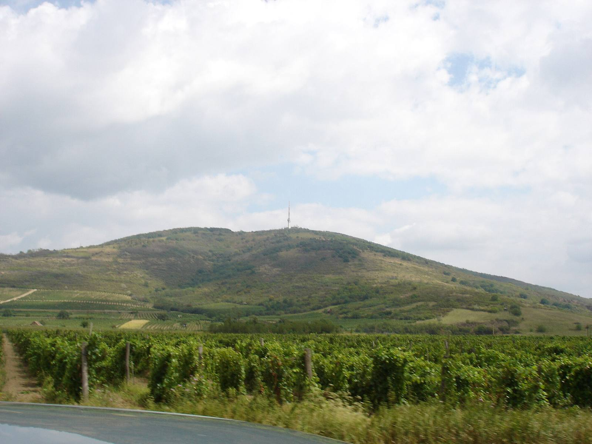

Egy hír útja ·
Egy nap, egy hír, 3000 vélemény.
Görgess le, és nézd meg, hogyan alakul a közhangulat — ahogy a magorg.hu avatar-panelje látja.
↓
Egy hír útja ·
Görgess le, és nézd meg, hogyan alakul a közhangulat — ahogy a magorg.hu avatar-panelje látja.
↓

1. fejezet
Az üzemanyagár emelkedéséről szóló hír pillanatok alatt eljut a 3000 avatarhoz.

2. fejezet
A községekben élők érzékenyebbek: a hőtérképen jól látszik a különbség.

3. fejezet
Korfa és régiók: a panel a magyar népesség arányait követi.

4. fejezet
A szófelhő az avatarok indoklásaiból áll össze.

5. fejezet
Az árérzékenységi görbe megmutatja az optimális ársávot.
Megfogalmazod, mire vagy kíváncsi: termék, ár, üzenet, hír.
3000 MI-avatar — a magyar lakosság arányait követve — reagál, vitatkozik, dönt.
Teljes riport: szegmensek, indoklások, javaslatok, grafikonokkal.
Életkor, nem, régió, településtípus, végzettség és jövedelem a KSH-arányok szerint. A végleges arányokat KSH-adatokból állítjuk be.
Budapesttől Tokajig — minden régió és településtípus szerepel a panelben.


Piacméret, célcsoportok, versenytársak és igények feltérképezése napok alatt.
Melyik termékötlet, csomag vagy ár működik? A 3000 avatar válaszol.
Plakát, videó, szlogen tesztelése, mielőtt egy forintot költenél médiára.

Hogyan reagál Magyarország egy mai hírre? Óráson belüli közhangulat-kép.

A kutatás eredményeire épülő, konvertáló weboldal — egy kézből.
Hírreakció, szófelhő, kampány-előteszt, árérzékenység, tölcsér — és összevetés a hagyományos kutatással.
41% vásárolna, optimális ár 3 990 Ft, legnyitottabb: 18–29 évesek, Közép-Mo.
6 szegmens: városi fiatalok, vidéki családosok, nyugdíjasok, …
„Drágának tartom, de a gyerekeknek megvenném.” — avatar #1842
Árazás 3 990 Ft-on, kampányfókusz: Facebook + helyi média vidéken
Példa árak — a végleges árazás egyeztetés alatt.
1 kérdéskör, 3000 avatar, rövid összefoglaló
Szegmentált riport, ajánlások, egyeztetés
Kutatásra épülő weboldal kulcsrakészen
Mesterséges intelligenciával működő virtuális válaszadók, akiknek életkora, neme, lakóhelye, végzettsége és jövedelme a KSH népszámlálási arányait követi.
Gyors, olcsó előszűrésre és döntés-előkészítésre ideális. Nagy téttel járó döntéseknél valós mintás kontrollkutatást is javaslunk.
Egyszerűbb kérdéseknél akár órákon belül, teljes riportnál néhány munkanap alatt.
Nem. Az avatarok szintetikusak, statisztikai arányokból épülnek fel, személyes adatot nem tartalmaznak.
Igen — a kutatásból kiderül, mit akar a közönség, és erre építjük az oldalt.
Írd le a kérdésed — 24 órán belül ajánlattal jelentkezünk.
Képek: Wikimedia Commons, szabad licencek — forrásmegjelölés. Minden szám, grafikon és hírcím mintaadat, az árak példák. Az avatarok szintetikusak, nem valós személyek.